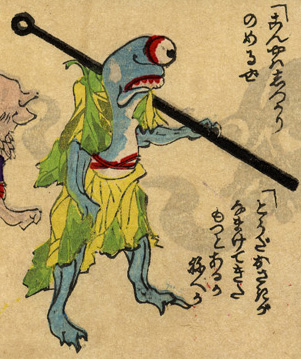

金棒を担いだ一つ目の化物。青い肌で、顔には目と口しかない。木の葉を合わせたような着物を身につけている。
出典：親書誌：U426_nichibunken_0226：化物の嫁入；バケモノノヨメイリ／日付：2010／資源識別子：U426_nichibunken_0226_0039_0000
Copyright (c)2010- International Research Center for Japanese Studies, Kyoto, Japan. All rights reserved.